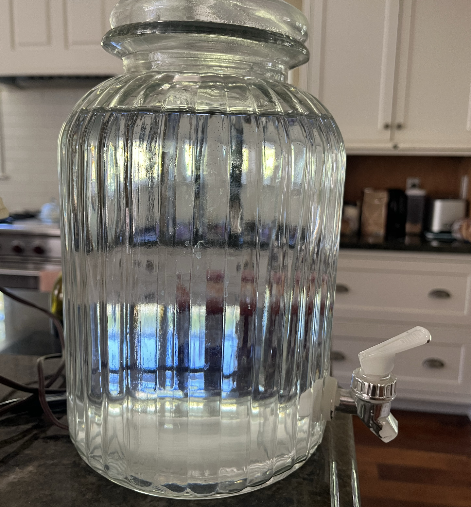

My girlfriend's parents have this water jug that they fill up every night (or midday depending on how much pickleball we play). When its getting filled up, sometimes it overflows because the thing takes so long it gets forgotten behind other tasks.
An idea came to me: make a pitch analyzer! You leave the phone propped up and by the time it's almost full. Here's a plot of just recording the absolute pitch using my iPhone's microphone.
Hmm...that's a bit strange, a lot of noise. Perhaps a moving average is in order. I'm using a tool called Marple, that allows for quick plots to be made with calculated values.
Okay that didn't help at all, the Moving Average is a bust - too busy when in low sampling window, and too flat when the window is upped.
What we need is a band-pass filter, or some sort of conditional statement where you can filter by the audible hearing band (800-2500Hz) at least to zoom in a bit on your interest pitch.
Find below, that band-pass filter, a moving average of it, as well as a cool cumulative sum of when the values returned from the band-pass condition.
The idea here is to get a scope of what we're dealing with in terms of raw data to see if we can build some sort of a quick and easy 'model', that will allow live-analysis of the frequencies by the phone's mic and determine when the fill frequency/pattern of the jug.